Chapter 2 Univariate Data Analysis
In order to study big data, we first have to learn how to analyse the simplest type of information: univariate data. The word “univarite” refers to a set of information which contains only one variable. For example, a school database with grades for all students can be seen as univariate, because there is only one variable of interest: grades. Two or more variables can be put together to form bivariate or multivariate data. This will be the topic of future sessions.
In this example code, we will be working with the results of a study done in the 1970s. In this study, researchers assessed the levels of pollution accross multiple cities in the US by measuring the average annual temperature, number of manufacturing enterprises, population size, wind speed, annual precipitation and levels of the pollutant sulfur dioxide (SO2). Because it contains all of these pieces of information, this data set is multivariate. However, for now we will only focus on one of those variables: the average annual temperature.
Let’s start by loading the example data set. To access it you will have to install the R package “HSAUR2”. You can do this by running the following line, remember to make sure you are connected to the internet.
install.packages("HSAUR2")Now that the installation has completed, you can load the package with the following line.
library(HSAUR2)We are ready to start. Loading the HSAUR2 package will add a series of variables to R. One of those is “USairpollution”, which contains our example data. Let’s assign this data frame to the variable “dat” (dat standing for data).
dat <- USairpollutionYou can use head() to look at the first 6 lines of the table. Note how each of the rows is named after a US city, and each column contains a different piece of information for each city: sulfur dioxide levels, number of manufacturing enterpreises, population size, etc…
head(dat)## SO2 temp manu popul wind precip predays
## Albany 46 47.6 44 116 8.8 33.36 135
## Albuquerque 11 56.8 46 244 8.9 7.77 58
## Atlanta 24 61.5 368 497 9.1 48.34 115
## Baltimore 47 55.0 625 905 9.6 41.31 111
## Buffalo 11 47.1 391 463 12.4 36.11 166
## Charleston 31 55.2 35 71 6.5 40.75 148If you want to know how many cities and how many different variables are in this table, use the function dim() as follows.
dim(dat)## [1] 41 7Our table contains 7 variables for 41 different US cities.
Let’s extract only the “temperature” variable and assign it to a new variable called temps (temps for temperatures).
temps <- dat$temp2.1 Visualising univariate data
We must always look at the data we have before doing any analysis with it. This is because sometimes data sets contain errors, outliers or missing values, and visually inspecting them reveals all of these issues Furthermore, some patterns can be very clear to the human eye and will suggest us what we have to do next.
There are several methods for representing univariate data visually. Let’s look at a few of them.
2.1.1 Dot plot / Strip chart
Each of the cities has its own particular temperature. How to get an idea of how hot or cold they are? The easiest way to do this is by ordering the cities from coldest to hottest and then adding them one after another in a line. This type of graph is called a “dot plot” (because each number is usually represented by a dot) or “strip chart”.
To create a strip chart in R, simply use the stripchart() function, specifying the name of your data frame:
stripchart(temps)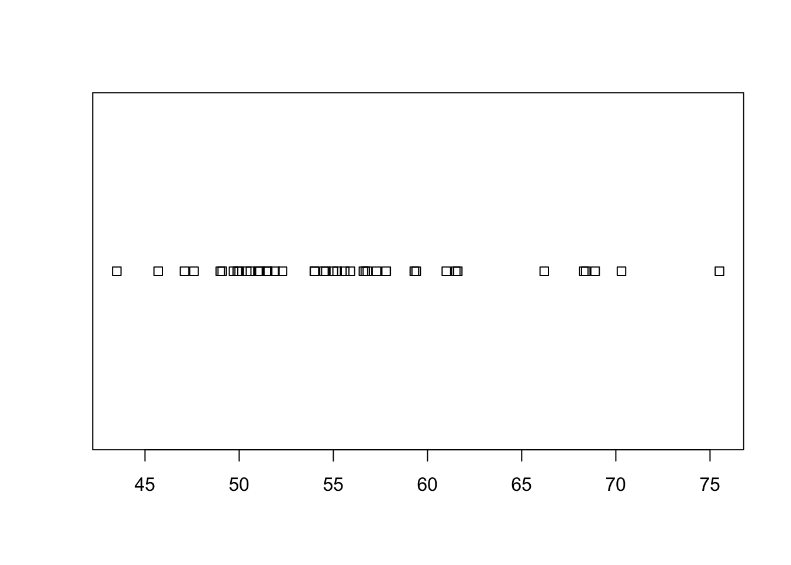
This is a good start, but the plot has no title and the axes have no names. This is really bad practice! We can add titles via the argument “main” and label the X and Y axes using the arguments “xlab” and “ylab”.
Let’s also change the squares into dots, which are more commonly used. To do that let’s set the argument “pch” to 19. “pch” stands for “Plotting Character”, and tells R which figure to use for each of the elements in our graph. Each number correspond to a different figure and you can use anything from triangles and rectangles to crosses and dots.
Let’s also add “stack” in the method argument. This tells R that, if two cities have very similar temperatures, they should be stacked one on top of the other. In this way we know that multiple cities fall in the same range.
stripchart(temps, method = "stack", pch=19, main="Temperature of US cities", xlab="Temperature (ºF)")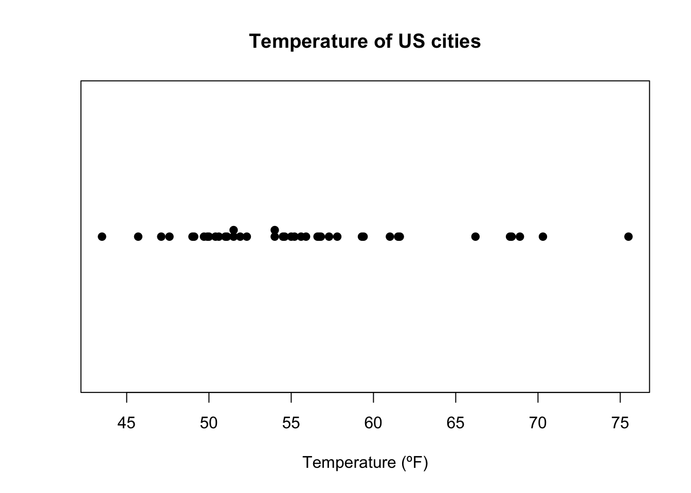
2.1.2 Histograms
But sometimes having dots ordered by value is not enough, because it doesn’t tell us anything quantitative about the data. It is more common to use histograms. To create a histogram, we divide the range of temperatures in equal intervals (sometimes called “bins”) and count how many cities fall in each bin. We then create bars, and the height of each bar reflects the number of cities with temperature in that range.
To create a histogram in R simply use the funciton hist()
hist(temps, main="Temperature of US cities", xlab="Temperature (ºF)")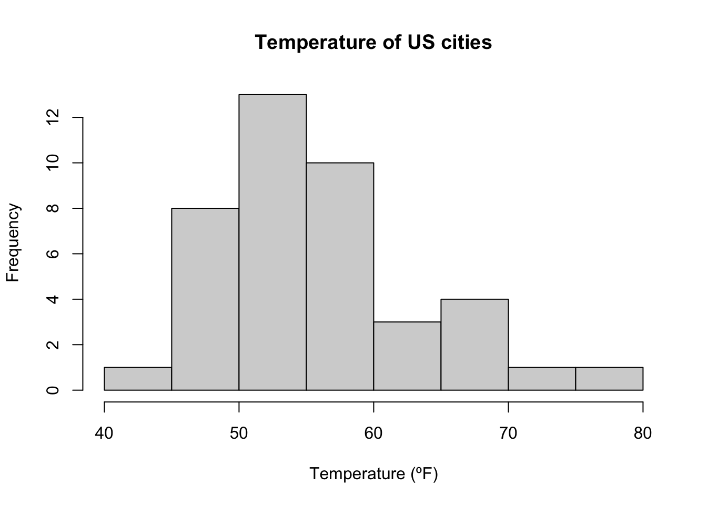
However, sometimes even this is not accurate enough. For example, now we know there are 13 cities with temperature between 50 and 55 ºF, but how big actually is this number? If we only had information for 15 cities it would be huge, but if we had information for 100 it would be pretty small. For this reason, sometimes it is better to use “percentage (proportion) of cities” and not number of cities. To do this in R, set the frequency argument (“freq”) to FALSE.
hist(temps, freq = FALSE, main="Temperature of US cities", xlab="Temperature (ºF)")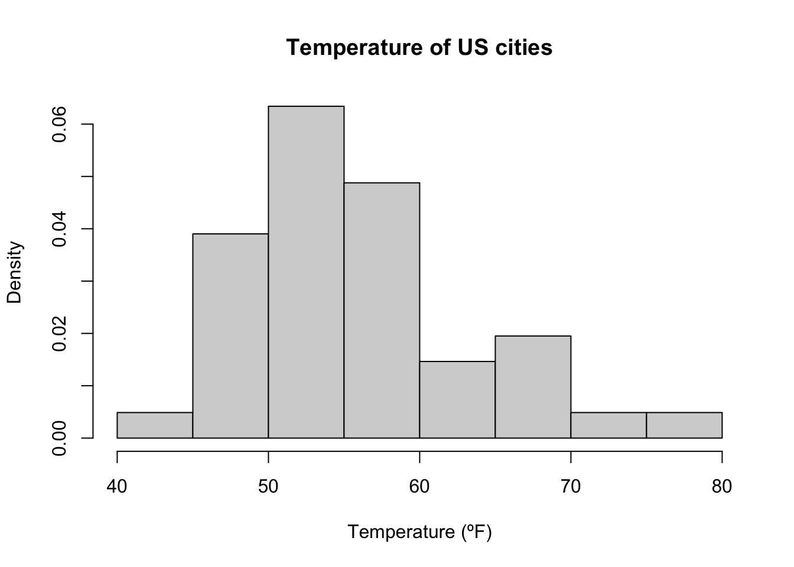
Note how the y axis has changed! Now we know that 7% of the cities we have information for have a temperature of 50 to 55 ºF.
You can also increase the numebr of bars (or, to be precise, the number of bins) using the “breaks” argument. For example, setting breaks=20 will cause R to plot approximately 20 bars in the histogram.
hist(temps, freq=FALSE, main="Temperature of US cities", xlab="Temperature (ºF)", breaks=20, col="grey")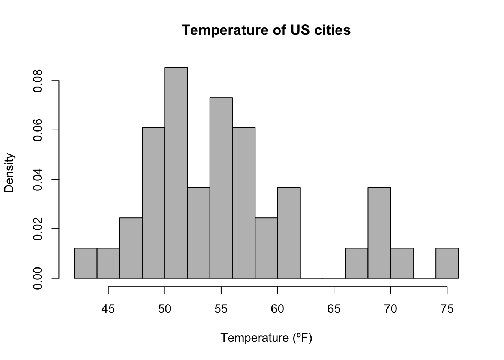
This allows us to have more detailed information on the data (we call this “granularity”). For example, we can now see that there are 4 or 5 cities with unusually high temperatures. These might be outliers. Notice how we also changed the colour of the bars to grey using the argument “col” (col for color).
2.1.3 Density plot
Sometimes drawing bars might not be the best option. We can create an approximate “line” which represents the same information using the function density(). Density() does more than simply creating a line! It is actually creating tiny “sliding bins” and estimating the value for each of them, then joining the values by lines. The way these values are estimated is by using “kernels”. Dernels and densities are extremely important when dealing with multivariate data.
A plot created in such a way is called a “density plot”. To create one in R, simply use density() followed by plot() as follows:
plot(density(temps), main="Temperature of US cities", xlab="Temperature (ºF)")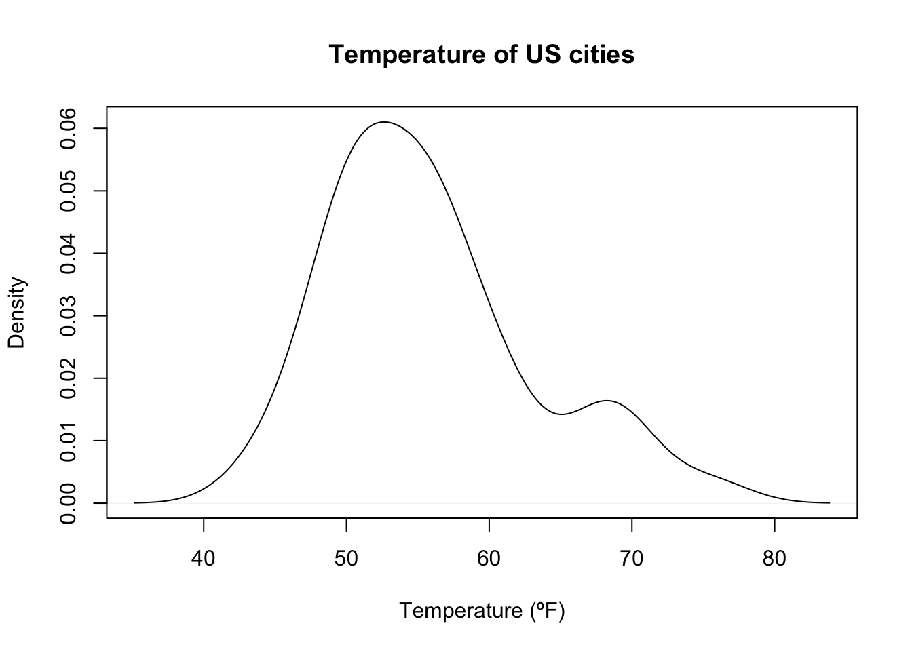
This density plot reveals, again, a few cities which are unusually hot.
Let’s change the color of the density plot to blue.
plot(density(temps), main="Temperature of US cities", xlab="Temperature (ºF)", col="blue")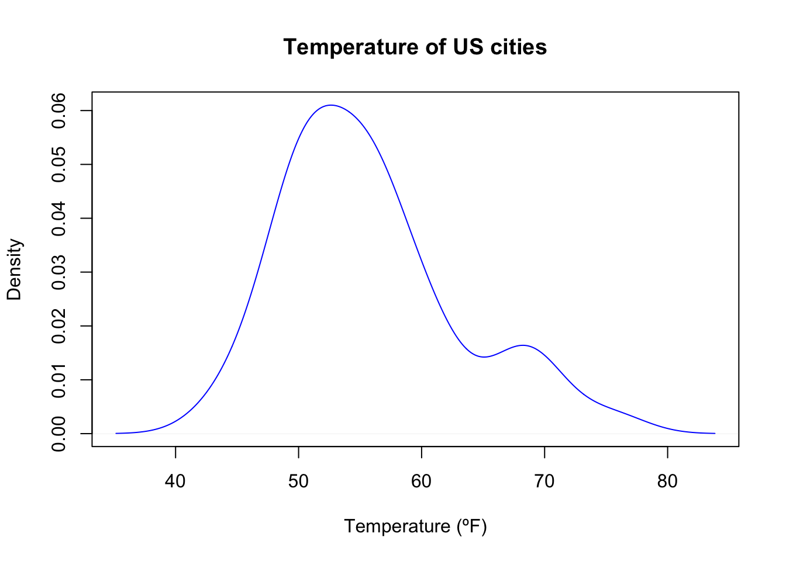
Now that we’ve seen the temperature data with our own eyes, let’s look at more formal ways to get useful information out of it.
2.2 Summarising univariate data
Perhaps the most question to ask with a data set like this one is the following: “What is the most common temperature?” or, in other words, “How hot or cold are MOST cities?”
2.2.1 Mean
To answer this we can calculate a simple average. The way to do this in R is via the mean() function.
mean(temps)## [1] 55.76341This tells us most US cities have a temperature close to 56ºF. Let’s see how this agrees with out visual inspection of the data. We can create a density plot and add a vertical line indicating the mean. To add vertical (or horizontal) lines, we use the function abline(), the v arguments tells R we want a vertical line.
plot(density(temps), main="Temperature of US cities", xlab="Temperature (ºF)")
abline(v = mean(temps))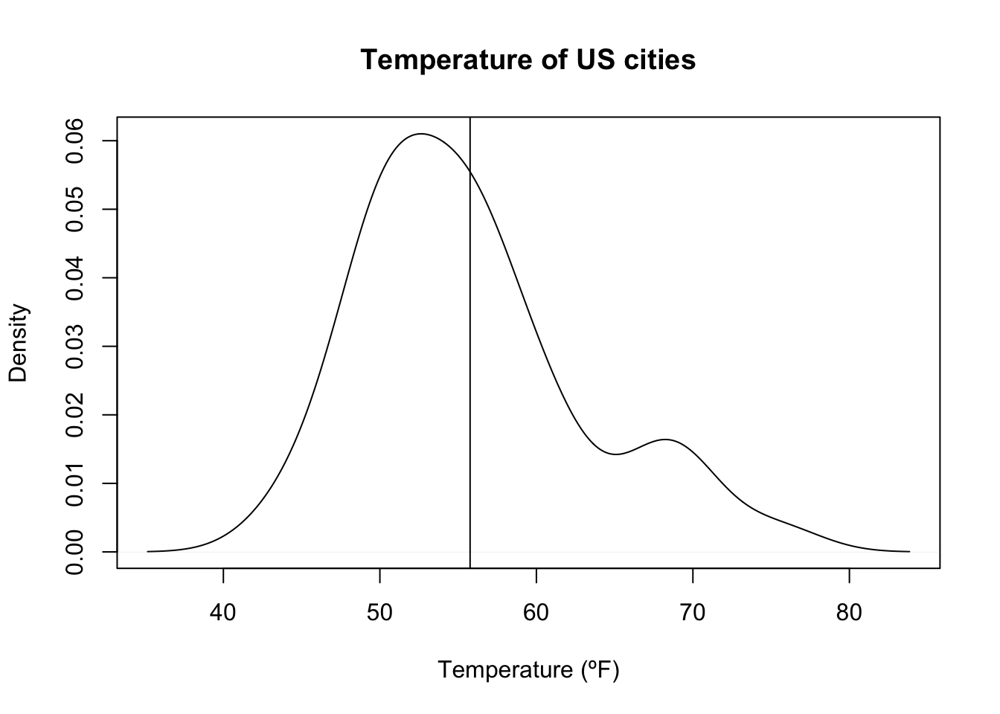
The mean temperature is indeed very close to the interval where most cities fall. However, it does not align with the most common value (the highest point of our density plot). Why is this? One possibility is that the unusually hot cities are causing this mean to be too high. We call this “skewing” the mean.
2.2.2 Median
Another way of answering this same question is by ordering all the cities from coldest to hottest and finding the one right in the middle of the series. What is the temperature of this “middle” city? We call this value the median. To calculate medians in R simply use the funciton median().
median(temps)## [1] 54.6Let’s now add both the mean and the median to the previous density plot. The mean will be a red line and the median a blue one.
plot(density(temps), main="Temperature of US cities", xlab="Temperature (ºF)")
abline(v = mean(temps), col="red")
abline(v = median(temps), col="blue")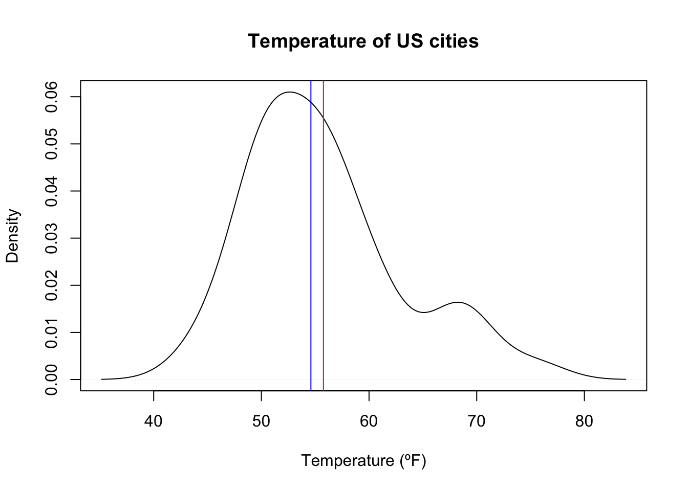
The median is closer to the position where, according to our eyes, the most common temeprature should be. This is because the median, as opposed to the mean, is “robust”. This means that even if we have outliers (cities with very high or low temperatures), the median will remain almost the same.
Let’s add the same lines to our first strip chart.
stripchart(temps, main="Temperature of US cities", xlab="Temperature (ºF)", method = "stack", pch=19)
abline(v = mean(temps), col="red")
abline(v = median(temps), col="blue")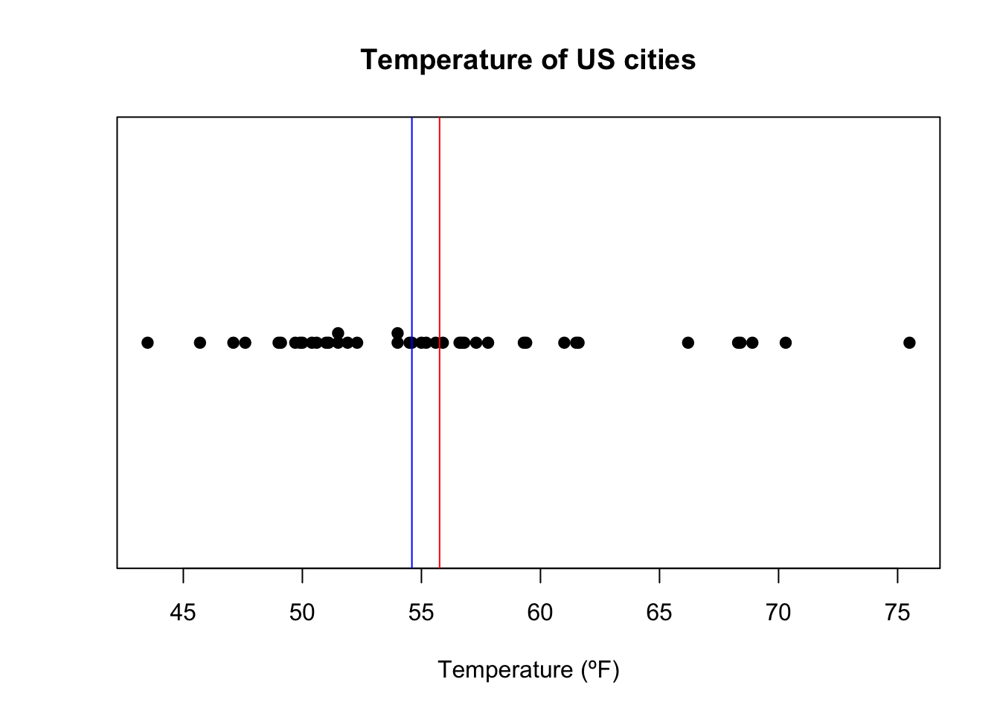
2.2.3 Quantiles
Sometimes we not only want to know what is the most common temperature, but also how many cities are cold, how many hot and how many not so cold but not so hot. To answer this question we could simply order the cities from coldest to hotest and then divide them in four groups: the first fourth (25%) are the coldest, the next fourth are the “kind of cold”” ones, next are the “kind of warm” cities, and the final fourth are the hotest. Then we can ask: what are the cutting points between these four groups? After which temperature do we no longer call a city cold but warm? We call these “cutting points” the quantiles of the data.
To create these 5 quantiles, which divide the data in fourths, you can use the function quantile().
quantile(temps)## 0% 25% 50% 75% 100%
## 43.5 50.6 54.6 59.3 75.5This tells us that the 25% coldest cities have temperatures below 43 ºF.
If this sounds too abstract, then let’s visualise it. Let’s go back to our original strip chart and add 4 vertical lines, one for each quantile.
stripchart(temps, main="Temperature of US cities", xlab="Temperature (ºF)", method = "stack", pch=19)
abline(v=quantile(temps))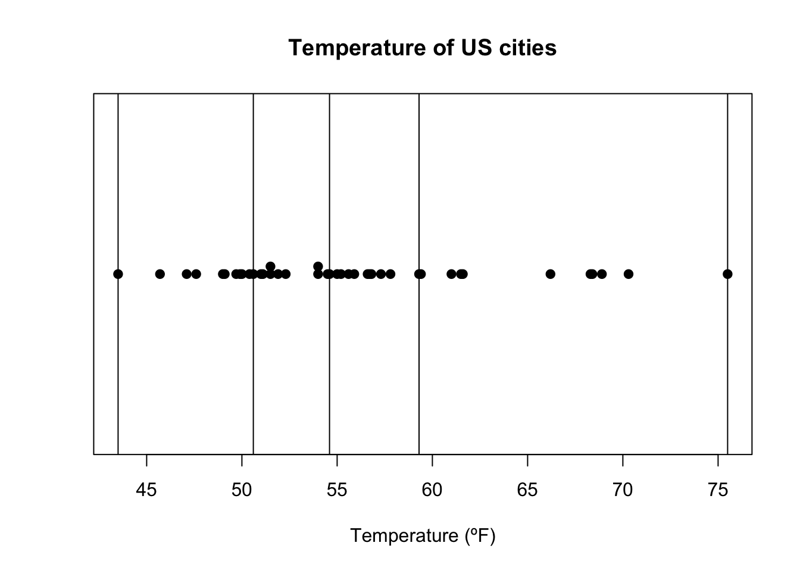
Notice how these quantiles divide the data in fourths. Because of this, in statistics they have a special name: quartiles. Another way to obtain the quartiles of a data set is by using the function summary().
summary(temps)## Min. 1st Qu. Median Mean 3rd Qu. Max.
## 43.50 50.60 54.60 55.76 59.30 75.50Notice how the middle quantile is the same as the median.
But we don’t always have to divide our data in fourths. We can, for instance, divide it in tenths. To do this, we use the quantile() function and add a new argument called “probs” (probs for probabilities). We will set probs to be the series of numbers 0.1, 0.2, 0.3, etc… until we reach 1. This tells R we want the first 0-10% of the data, then the 10-20% and so on.
plot(density(temps), main="Temperature of US cities", xlab="Temperature (ºF)")
abline(v=quantile(temps, probs = seq(0,1,0.1)))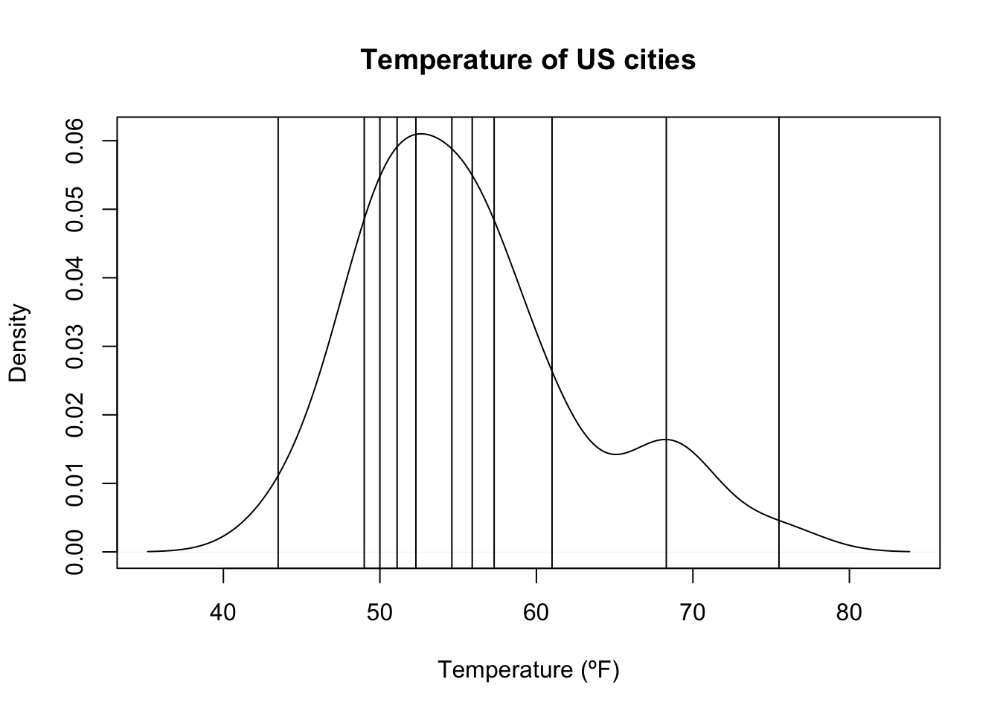
We call these specific quantiles the “deciles”.
Using the same procedure, we can divide the data in 100 tiny bins. We call the cutting points for this partition “percentiles”. Each of the bins created by this process will contain 1% of the data.
plot(density(temps), main="Temperature of US cities", xlab="Temperature (ºF)")
abline(v=quantile(temps, probs = seq(0,1,0.01)))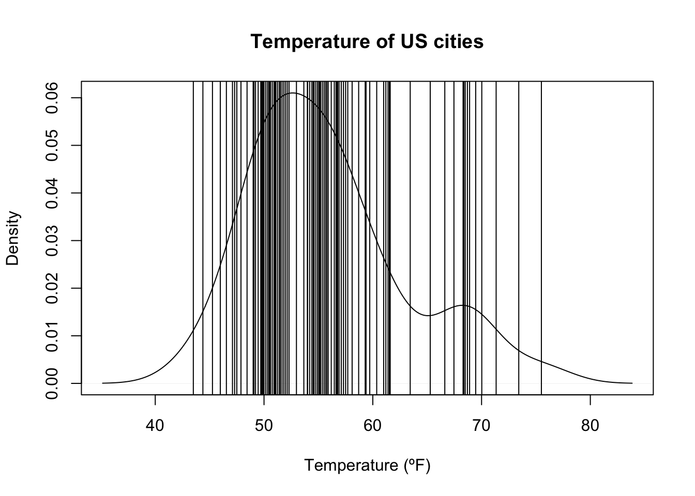
However, notice that this is purely thoeretical. We do not actually have information for 100 cities, only for 41! R is thus estimating how these quantiles would be if we indeed had 100 cities or more. This becomes very obvious in our strip chart:
stripchart(temps, main="Temperature of US cities", xlab="Temperature (ºF)", method = "stack", pch=19)
abline(v=quantile(temps, probs = seq(0,1,0.01)))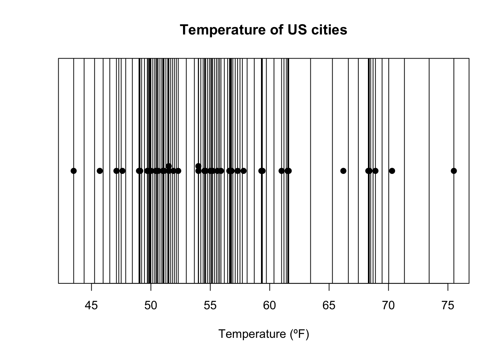
Notice how some of the bins do not contain any actual data points: if we increased our data size to 100 or 1000 cities we would expect these areas to start being filled up.
2.2.4 Standard deviation
Another question we can ask from this data is: “How different between each other are US cities in terms of temperature?”. We can think of this question as: “How different is the temperature of each US city to the average (mean) temperature?”
This might seem like an abstract question, but we can visualise it. Let’s represent the temperature of each city as a dot, and the average as a vertical line (just like in our strip chart). How far is each dot from the line? This is represented here by dashed line segments. The question we are asking can be thought of as “how long are these lines usually?”
plot(x = temps, y=1:41, pch=19, main="Temperature of US cities", xlab="Temperature (ºF)", ylab="", yaxt = "n")
abline(v=mean(temps))
segments(x0 = temps, x1 = mean(temps),y0=1:41,y1=1:41, lty="dotted")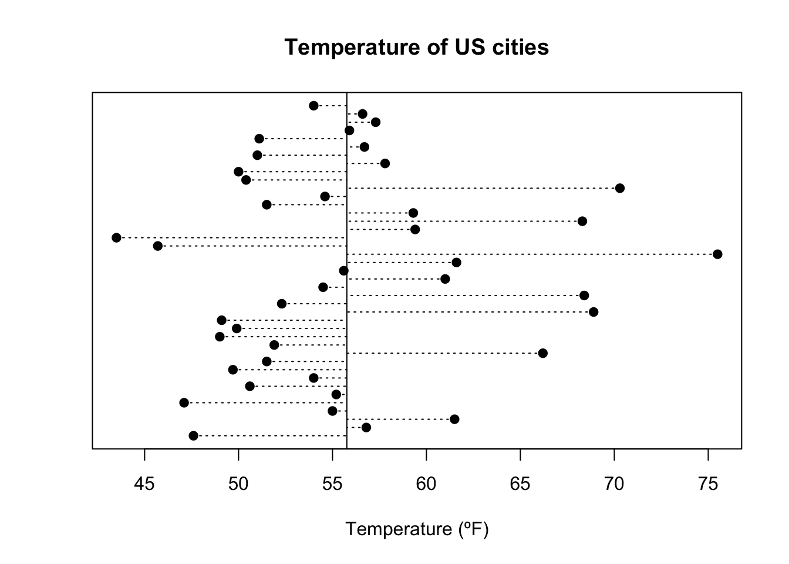
To find these values, let’s substract the mean temperature from the temperature of each single city. We will assign this value to the variable “diffs”.
diffs <- temps - mean(temps)Then, we can simply ask: how big are these differences on average? Let’s apply the mean function to them.
mean(diffs)## [1] -2.166289e-15We see that the number is extremely small! However, we can see in the plot above that this is not true: cities are sometimes very far from the average line. So what went wrong?
If we look at the content of diffs we will see the problem right away: some of this differences are negative and some are possitive, and you cannot simply add positives and negatives. We are not interested in the difference being positive or negative (colder or hotter cities), we are just interested in how big it is.
diffs## [1] -8.1634146 1.0365854 5.7365854 -0.7634146 -8.6634146 -0.5634146 -5.1634146 -1.7634146 -6.0634146 -4.2634146 10.4365854 -3.8634146 -6.7634146 -5.8634146
## [15] -6.6634146 13.1365854 -3.4634146 12.6365854 -1.2634146 5.2365854 -0.1634146 5.8365854 19.7365854 -10.0634146 -12.2634146 3.6365854 12.5365854 3.5365854
## [29] -4.2634146 -1.1634146 14.5365854 -5.3634146 -5.7634146 2.0365854 -4.7634146 0.9365854 -4.6634146 0.1365854 1.5365854 0.8365854 -1.7634146To solve this problem, we can square each of this numbers. This, because squares are always possitive, regardless of the sign of the original number. for instance 2^2 and (-2)^2 are both 4. Let’s do this and see if we can get rid of the negative sign.
diffs^2## [1] 66.64133849 1.07450922 32.90841166 0.58280190 75.05475312 0.31743605 26.66085068 3.10963117 36.76499703 18.17670434 108.92231410 14.92597264 45.74377751
## [14] 34.37963117 44.40109459 172.56987507 11.99524093 159.68328971 1.59621654 27.42182629 0.02670434 34.06572873 389.53280190 101.27231410 150.39133849 13.22475312
## [27] 157.16597264 12.50743605 18.17670434 1.35353361 211.31231410 28.76621654 33.21694825 4.14767995 22.69011898 0.87719215 21.74743605 0.01865556 2.36109459
## [40] 0.69987507 3.10963117It seems to have worked. Now we can calcualte the average distance using mean. However, remember we applied a square, so now we have to revert it. We revert it using the opposite operation: a square root.
sqrt(mean(diffs^2))## [1] 7.139029This value (the average difference between any particular temperature and the average temperature) is called “standard deviation”. It is a measure of the “spread” of the data, which in common words means how different cities are to each other.
We don’t have to go into the trouble of calculating all of these squares, means, and squared roots every time we want the standard deviation. R already has a function that does that for us called sd(). Let’s apply it to the data:
sd(temps)## [1] 7.227716Notice how it is almost the same number. The difference in decimal points is simply because of precision.
2.3 Comparing data to probability distributions
We might also be interested in how our observations are “distributed”. You can think of this as “what kind of shape does the histogram and density plots have?” Can we see one very frequent value, forming a bell shape? Or do we see two or three frequent values? If we see a bell shape, is it symmetric? Or is the right or left tail longer?
But finding the distribution that describes a dataset is much more than simply knowing its “shape”: it is a deep statistical question that can help us understand how the data behaves. During the theoretical session that accompanies this exercise you will learn more about statistical distributions. Multiple of these exist such as the binomial, the Poisson, the gamma, the T (Student’s) and the normal distribution. For now, let’s focus only on the normal distribution.
We say that data is normally distributed if it has a symmetric “bell shape” (the proper name for this shape is ‘Gaussian’, because Gauss was the mathematician who described it) with one very frequent value. We only need two numbers to define a normal distribution:
- the mean
- the standard deviation
R allows us to very easily create random numbers from a normal distribution. For example, let’s use the mean and standard deviation we calculated before as the parameters of a normal distribution. Using them, let’s “simulate” 1000 data points. You can think of this as simulating in R data for 1000 US cities. Of course these cities do not exist, but in the computer they will behave as “the average US city”.
To generate random numbers using the normal distribution in R, use the function rnorm() and specify how many random numbers you need, what is the mean and what is the standard deviation. We will assign these thousand random numbers to the variable “cities”.
cities <- rnorm(n = 1000, mean = mean(temps), sd = sd(temps))Now, let’s create a histogram of such simulated temperatures.
hist(cities, freq=FALSE, breaks=50, col="grey", main="Simulated temperatures", xlab="Temperature (ºF)")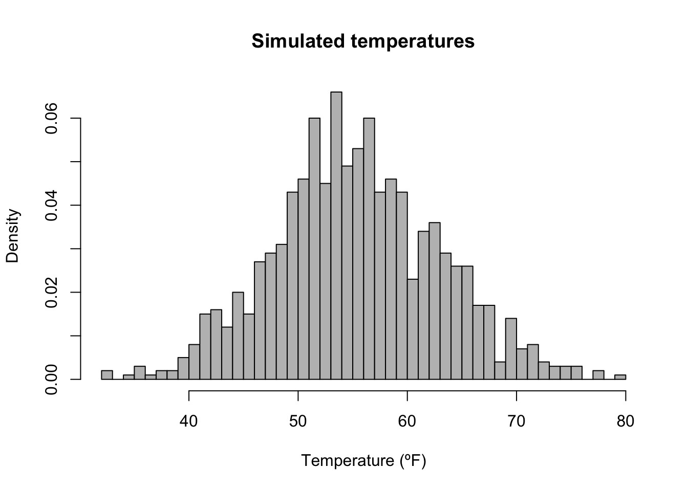
We can see that they indeed form a symmetric bell shape around our mean.
Now we are able to ask: “Is our real data on temperature of US cities normally distributed?” To answer this question, let’s put our simulated (theoretical) values and our real values together. Do they have the same properties? Do we see the same shape? We will plot the normal distribution in black and the real data in blue
plot(density(temps), main="Simulated vs real temperatures",xlab="Temperature (ºF)", col="blue")
lines(density(cities))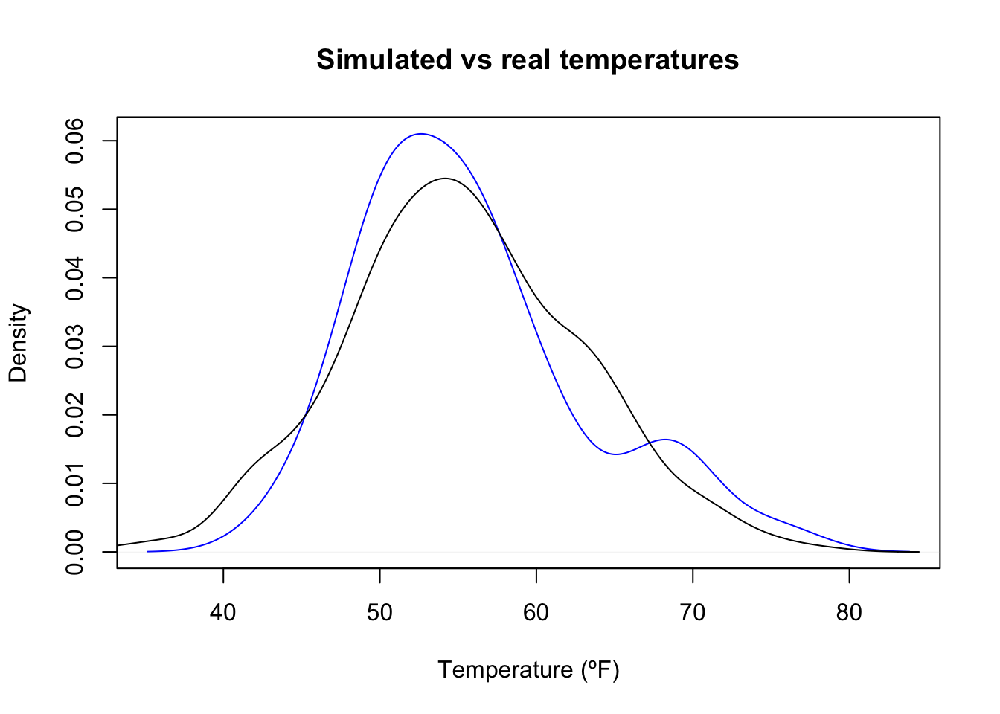
You can already see that our real data, even though similar to the normal distribution, does not really have the same shape. There are a number of really hot cities that appear like a bump towards the right side of the plot.
But evaluating this with our eyes is not rigorous enough! To make this a more formal test let’s do the following:
- We create percentiles for our data, as we did above:
plot(density(temps), main="Temperature of US cities", xlab="Temperature (ºF)")
abline(v=quantile(temps, probs = seq(0,1,0.01)))
- We do the same with the simulated (theoretical) data:
plot(density(cities), main="Simulated temperatures", xlab="Temperature (ºF)")
abline(v=quantile(temps, probs = seq(0,1,0.01)))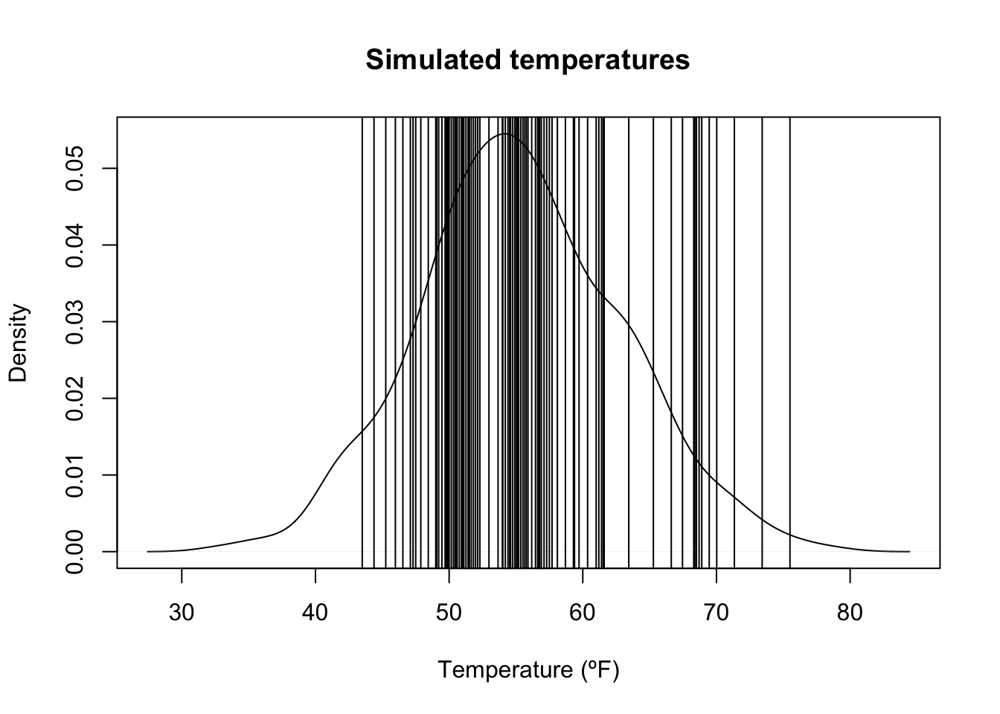
Now all we have to do is compare both sets of quantiles. Are they the same? We can do this by plotting the theoretical against the real quantiles. If they are the same, they should follow a straight line. We call this a quantile-quantile plot, sometimes called a “QQ-plot”.
There is a very easy way to do this in R. You can use the function qqnorm(), which will automatically create such a plot. You can even add a straight line to test if the points fall on it using qqline(). Note, however, that this function only works for normal distributions.
qqnorm(temps, main="Temperature of US cities")
qqline(dat$tem)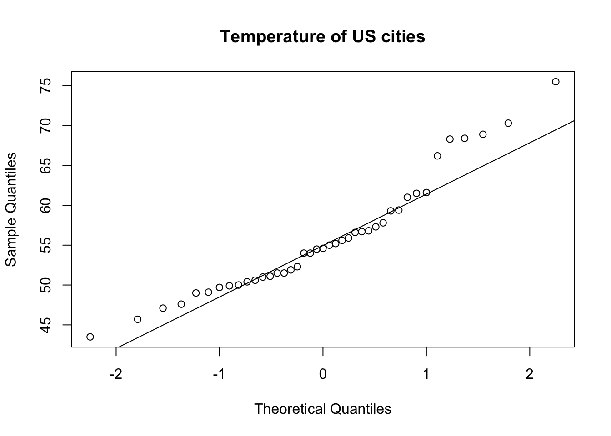
Now we can see that, indeed, there are some outlier cities at the very top. However, the rest o the data does follow the line, so we can confidently say they are normally distributed!
2.4 Box plots
Finally, let’s study one last type of graph: the box plot. The box plot is a very simple plot which summarises all of our data. It is a box which contains the central 50% of the data. This means that the limits of the box are the 1st and 3rd quartile. We also add a line inside the box representing the median and whiskers that extend to the upper and lower limits of the data. If there are any obvious outliers, they are plotted as tiny dots outside the plot.
To create a boxplot in R, you can ue the boxplot() function as follows:
boxplot(temps, main="Temperature of US cities", ylab="Temperature (ºF)")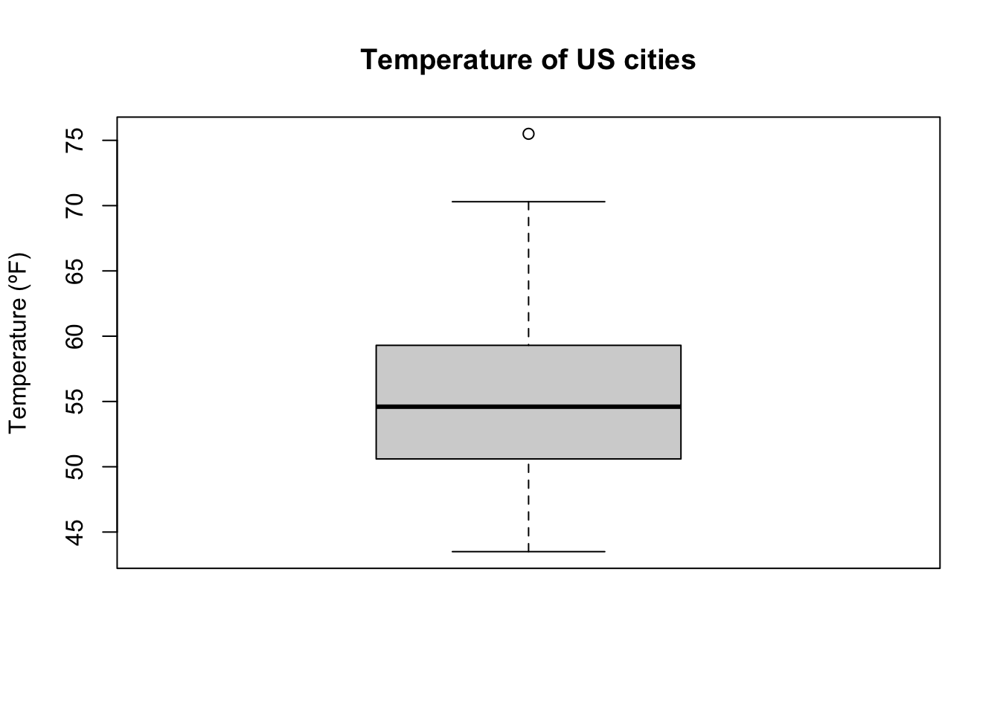
2.5 Data as a random sample
As discussed in the theoretical session, statistics consider any data set as a random sample. This means that, of all possible US cities at all possible times, we took a sample of 41 of them. But if we repeated this experiment again, we would get a different set of 41 temperatures. In fact, if we repeated it 100 times we would get 100 different sets of 41 values!
Let’s simulate this in R. We have already created a “fictional” set of 1000 cities above. Let’s take a sample of 41 temperatures out of thsoe 1000 and calculate the mean. Let’s then repeat this 10 times. We will thus get 10 means.
for(i in 1:10){
print(mean(sample(x = cities, size = 41)))
}## [1] 55.20746
## [1] 56.2
## [1] 55.5874
## [1] 56.21404
## [1] 54.61815
## [1] 54.34514
## [1] 55.84622
## [1] 54.8428
## [1] 55.74103
## [1] 54.96623You can see that every mean is different to the other, but at the same time they are all kind of similar, and they are also similar to the mean in our real data (54.6).
Let’s now repeat this 1000 times and create a histogram!
averages <- c()
for(i in 1:1000){
averages[i] <- (mean(sample(x = cities, size = 41)))
}hist(averages, breaks = 20, col="grey", main="", xlab="Average")
abline(v=c(quantile(averages, probs = c(0.025,0.975))))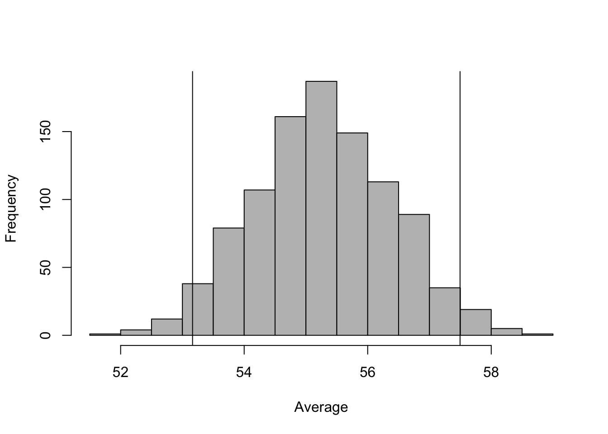
Notice that I’ve added two vertical lines: 95% of the times our average (mean) is between these two lines. We call this a confidence interval. In this case, a 95% confidence interval. What this means is that, if the 1000 cities we simulated were real and if we repeatedly measured their temperatures, 95% of the times we would get an average between 53.16 and 57.45 ºF.
quantile(averages, probs = c(0.025,0.975))## 2.5% 97.5%
## 53.16431 57.49523So from now on, every time you calculate an average, median or standard deviation remember that the value you get is only one of hundreds of possibilities. If you repeat the experiment you will get something different! We call this a “random variable”. Means and standard deviations are always random variables, and thus it is always a good idea to not only say their value, but also add a confidence interval.
2.6 Exercises
Now you will have some time to analyse your own project data. You can use any of the functions we learnt here by simply copying and pasting them in a new R file. You can start by askig the following questions:
- How many numeric variables are in my data? Focus on only one of them
- Create a histogram of such a variable
- Create a density plot
- Create a box plot
- What is the average of this variable? Calculate the mean and the median
- How spread is this variable? Calculate the standard deviation
- Is this data normally distributed? Create a qqplot
- What does this tell you about the topic of your data? Can you learn something from it?